Plot an Interpolation Between Two Related Data Sets
Plot an interpolation between two related data sets, typically transformations of each other. This function is designed to be used in animations.
Points are plotted via the linear interpolation, $$ XY = XY1 + \alpha (XY2 - XY1)$$
The function allows plotting of the data ellipse, the linear regresion line, and line segments showing the movement of points.
interpPlot(xy1, xy2, alpha, xlim, ylim, points=TRUE, add=FALSE, col=palette()[1], ellipse = FALSE, ellipse.args = NULL, abline=FALSE, col.lines = palette()[2], lwd=2, id.method = "mahal", labels=rownames(xy1), id.n = 0, id.cex = 1, id.col = palette()[1], segments=FALSE, segment.col="darkgray", ...)
Arguments
| xy1 | First data set, a 2-column matrix or data.frame |
|---|---|
| xy2 | Second data set, a 2-column matrix or data.frame |
| alpha | The value of the interpolation fraction, typically (but not necessarily) |
| xlim, ylim | x, y limits for the plot. If not specified, the function uses the
ranges of |
| points | Logical. Whether to plot the points in the current interpolation? |
| col | Color for plotted points. |
| add | Logical. Whether to add to an existing plot? |
| ellipse | logical. |
| ellipse.args | other arguments pqassed to |
| abline | logical. |
| col.lines | line color |
| lwd | line width |
| id.method | How points are to be identified. See |
| labels | observation labels |
| id.n | Number of points to be identified. If set to zero, no points are identified. |
| id.cex | Controls the size of the plotted labels. The default is 1 |
| id.col | Controls the color of the plotted labels. |
| segments | logical. |
| segment.col | line color for segments |
| … | other arguments passed to |
Details
Interpolations other than linear can be obtained by using a non-linear series of
alpha values. For example alpha=sin(seq(0,1,.1)/sin(1) will give
a sinusoid interpolation.
Value
Returns invisibly the interpolated XY points.
Note
The examples here just use on-screen animations to the console graphics window.
The animation package provides facilities to save these in various formats.
See also
dataEllipse,
showLabels,
animation
Examples
################################################# # animate an AV plot from marginal to conditional ################################################# data(Duncan, package="car") duncmod <- lm(prestige ~ income + education, data=Duncan) mod.mat <- model.matrix(duncmod) # function to do an animation for one variable dunc.anim <- function(variable, other, alpha=seq(0, 1, .1)) { var <- which(variable==colnames(mod.mat)) duncdev <- scale(Duncan[,c(variable, "prestige")], scale=FALSE) duncav <- lsfit(mod.mat[, -var], cbind(mod.mat[, var], Duncan$prestige), intercept = FALSE)$residuals colnames(duncav) <- c(variable, "prestige") lims <- apply(rbind(duncdev, duncav),2,range) for (alp in alpha) { main <- if(alp==0) paste("Marginal plot:", variable) else paste(round(100*alp), "% Added-variable plot:", variable) interpPlot(duncdev, duncav, alp, xlim=lims[,1], ylim=lims[,2], pch=16, main = main, xlab = paste(variable, "| ", alp, other), ylab = paste("prestige | ", alp, other), ellipse=TRUE, ellipse.args=(list(levels=0.68, fill=TRUE, fill.alpha=alp/2)), abline=TRUE, id.n=3, id.cex=1.2, cex.lab=1.25) Sys.sleep(1) } } # show these in the R console if(interactive()) { dunc.anim("income", "education") dunc.anim("education", "income") }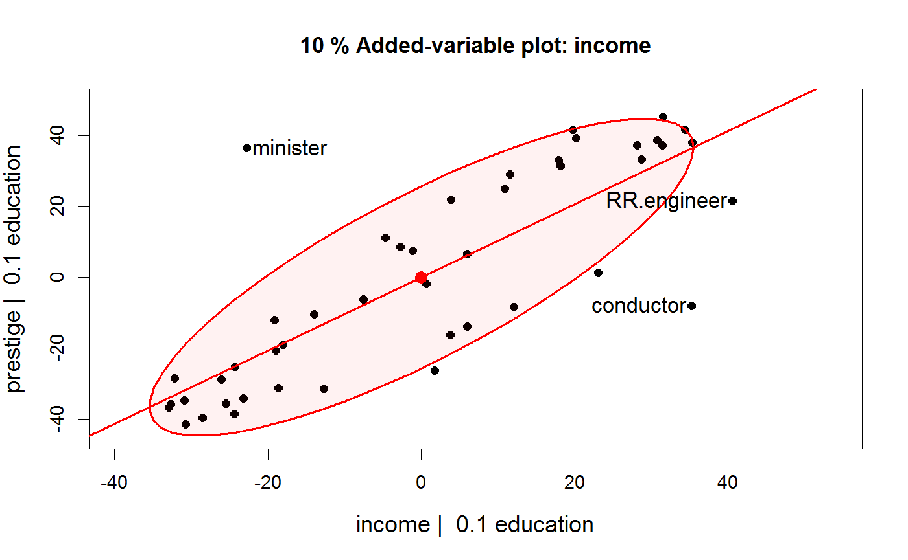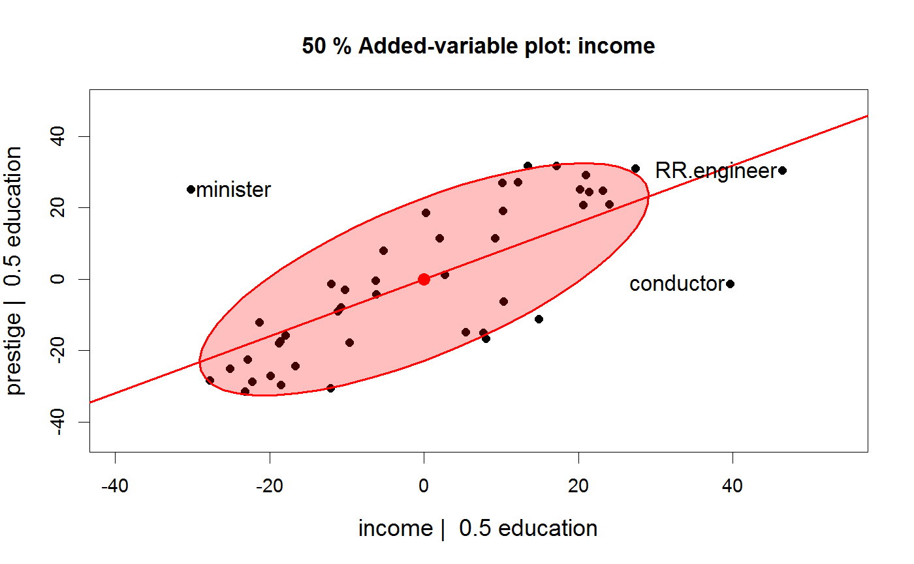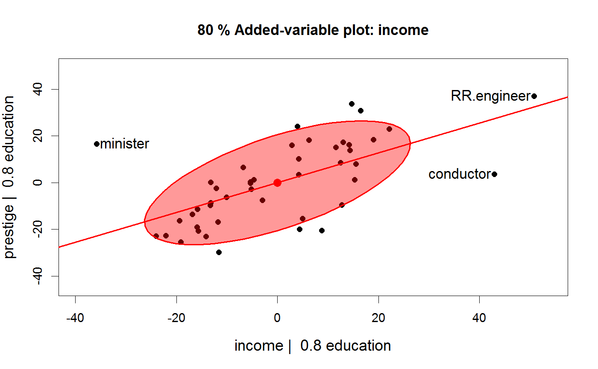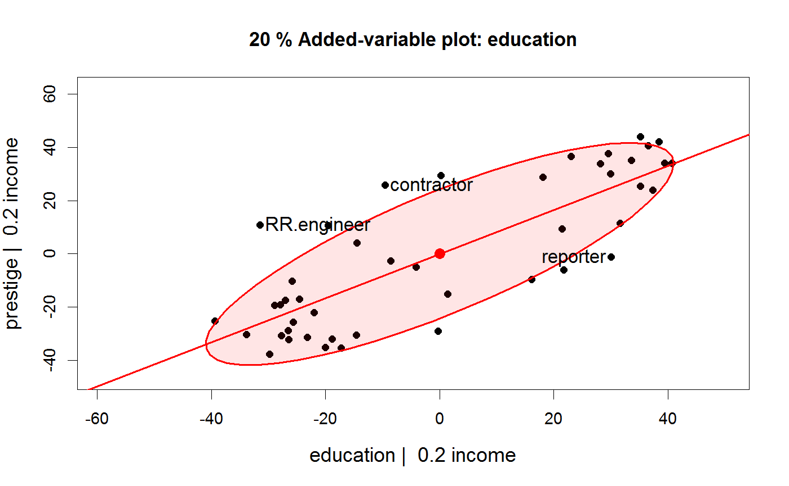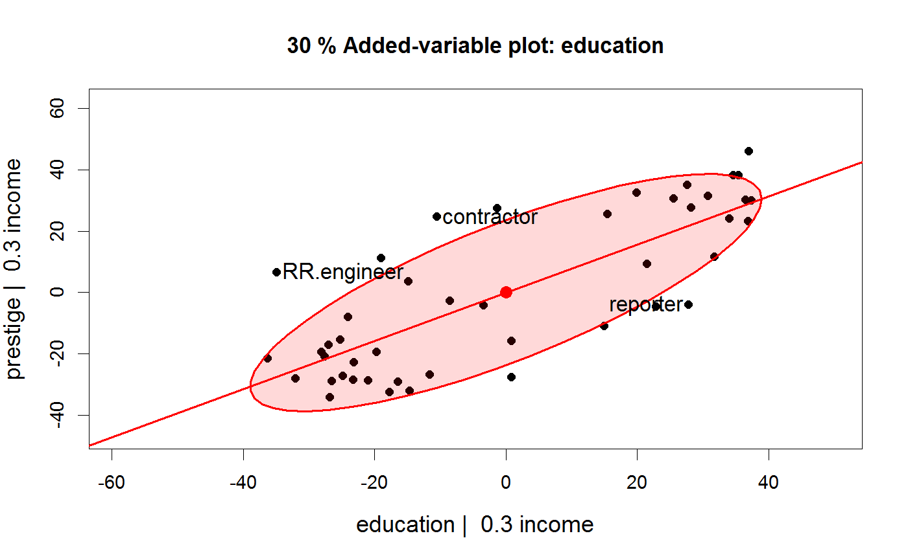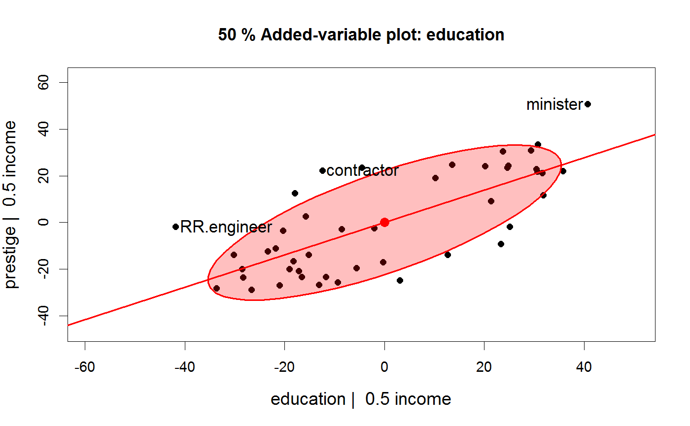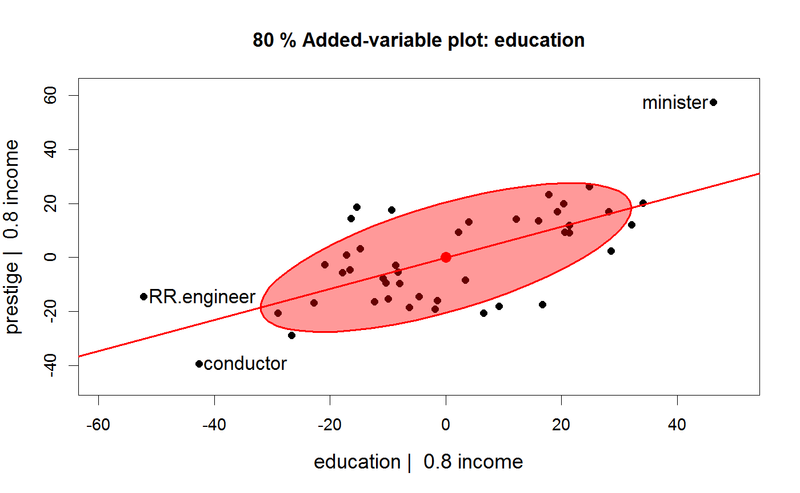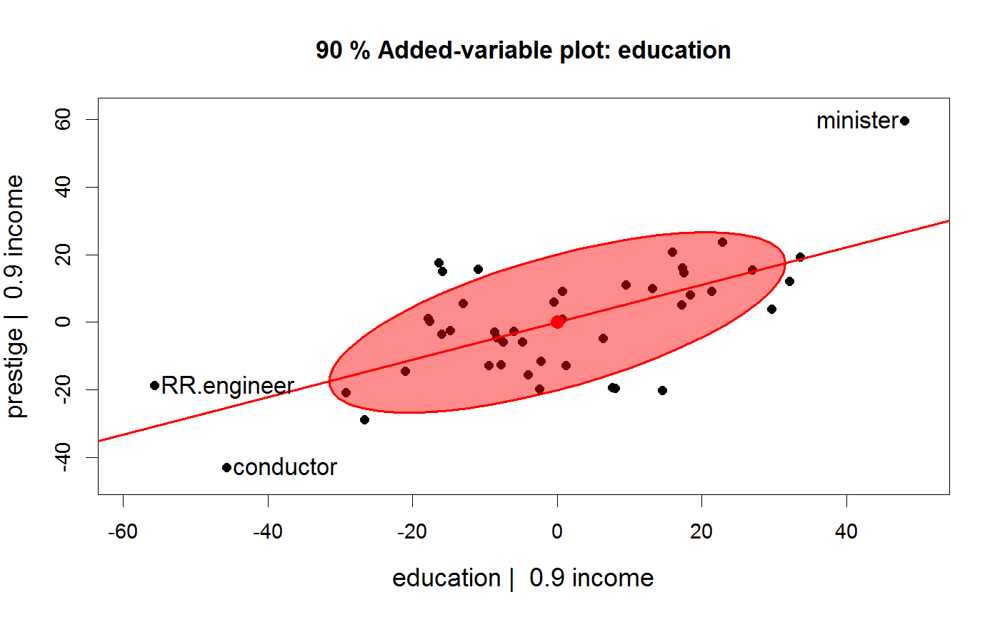############################################ # correlated bivariate data with 2 outliers # show rotation from data space to PCA space ############################################ set.seed(123345) x <- c(rnorm(100), 2, -2) y <- c(x[1:100] + rnorm(100), -2, 2) XY <- cbind(x=x, y=y) rownames(XY) <- seq_along(x) XY <- scale(XY, center=TRUE, scale=FALSE) # start, end plots dataEllipse(XY, pch=16, levels=0.68, id.n=2)mod <- lm(y~x, data=as.data.frame(XY)) abline(mod, col="red", lwd=2)pca <- princomp(XY, cor=TRUE) scores <- pca$scores dataEllipse(scores, pch=16, levels=0.68, id.n=2)abline(lm(Comp.2 ~ Comp.1, data=as.data.frame(scores)), lwd=2, col="red")# show interpolation # functions for labels, as a function of alpha main <- function(alpha) {if(alpha==0) "Original data" else if(alpha==1) "PCA scores" else paste(round(100*alpha,1), "% interpolation")} xlab <- function(alpha) {if(alpha==0) "X" else if(alpha==1) "PCA.1" else paste("X +", alpha, "(X - PCA.1)")} ylab <- function(alpha) {if(alpha==0) "Y" else if(alpha==1) "PCA.2" else paste("Y +", alpha, "(Y - PCA.2)")} interpPCA <- function(XY, alpha = seq(0,1,.1)) { XY <- scale(XY, center=TRUE, scale=FALSE) if (is.null(rownames(XY))) rownames(XY) <- 1:nrow(XY) pca <- princomp(XY, cor=TRUE) scores <- pca$scores for (alp in alpha) { interpPlot(XY, scores, alp, pch=16, main = main(alp), xlab = xlab(alp), ylab = ylab(alp), ellipse=TRUE, ellipse.args=(list(levels=0.68, fill=TRUE, fill.alpha=(1-alp)/2)), abline=TRUE, id.n=2, id.cex=1.2, cex.lab=1.25, segments=TRUE) Sys.sleep(1) } } # show in R console if(interactive()) { interpPCA(XY) }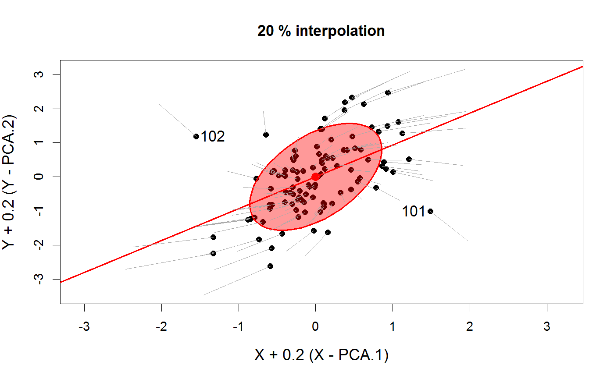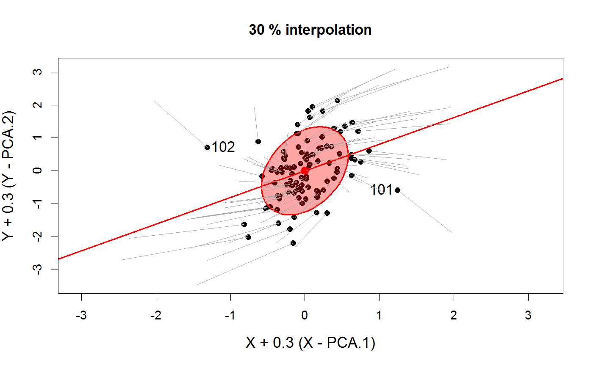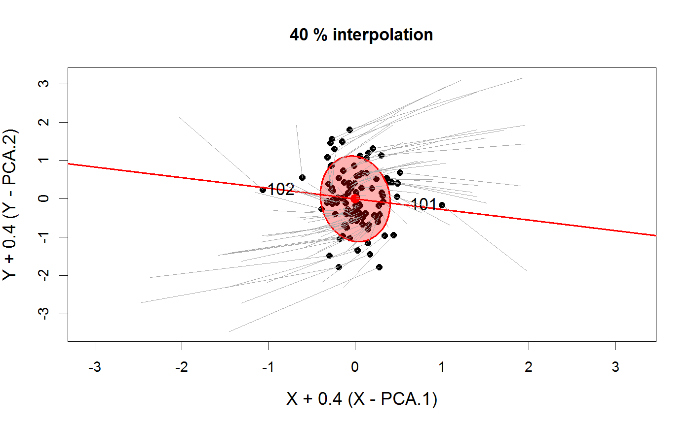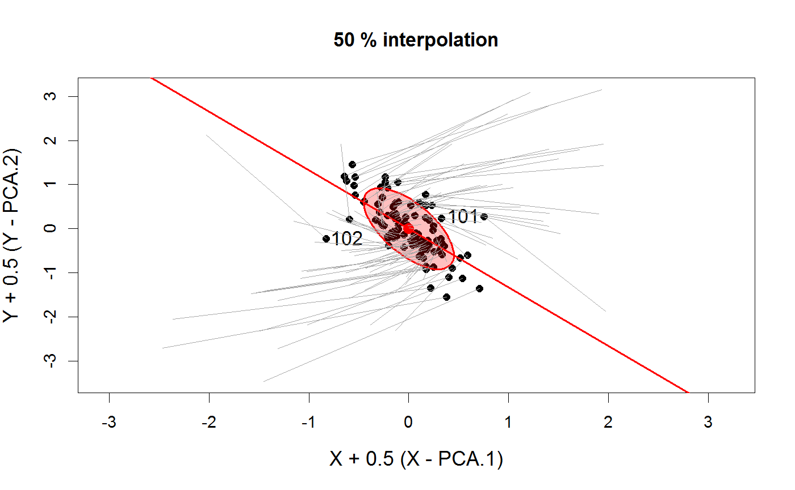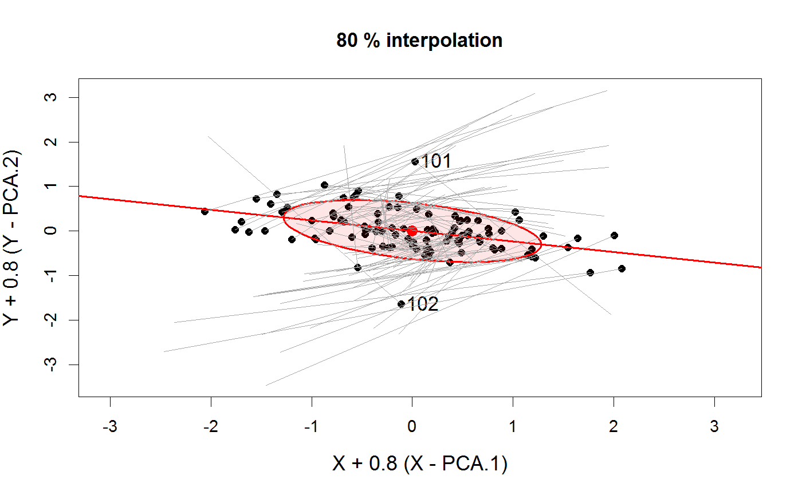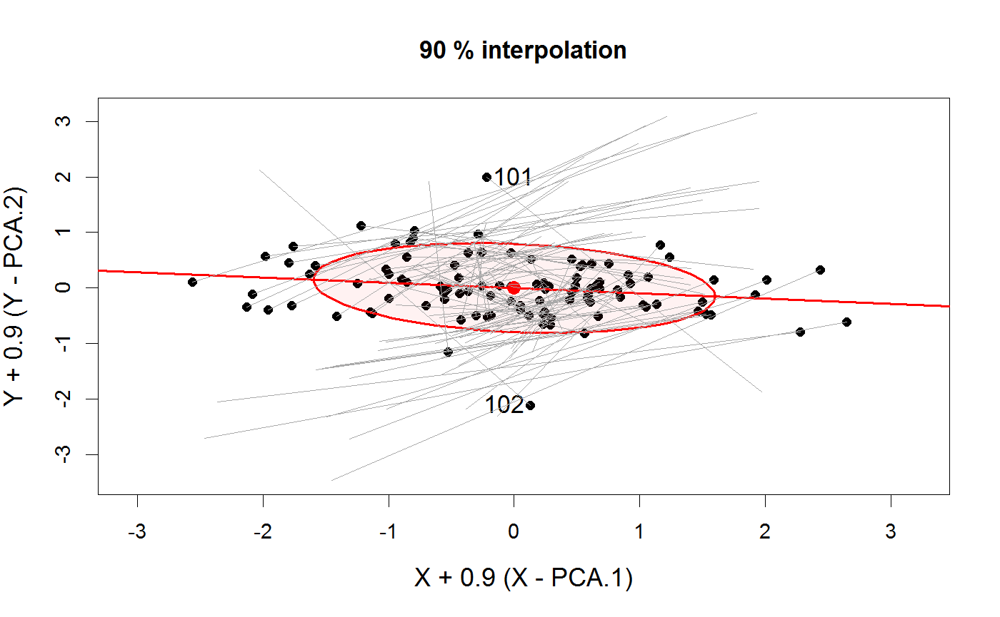# NOT RUN { library(animation) saveGIF({ interpPCA(XY, alpha <- seq(0,1,.1))}, movie.name="outlier-demo.gif", ani.width=480, ani.height=480, interval=1.5) # }